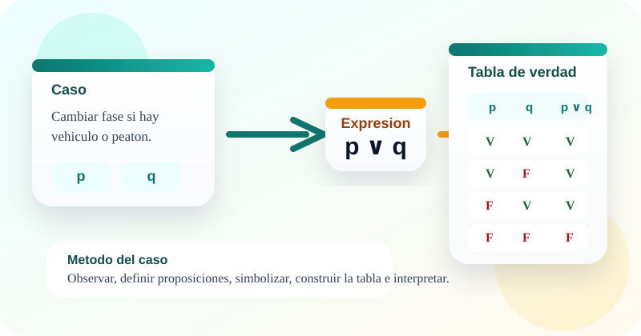

Casos guiados
Estudio de casos
Lógica proposicional y tablas de verdad
🤔 ¿Sabías que cuando una plataforma valida accesos, activa alertas o decide si una funcionalidad debe ejecutarse, está usando reglas lógicas que pueden expresarse con proposiciones?
Cada vez que un sistema evalúa condiciones como “si el usuario inicia sesión, entra al panel”, “si hay vehículo o peatón, cambia el semáforo” o “la app se publica solo si servidor y base de datos están activos”, está trabajando con lógica proposicional y tablas de verdad 📊. En este OVA aprenderás a identificar proposiciones, traducir casos a lenguaje simbólico y justificar formalmente una decisión 🚀.
Estos conceptos son clave en el mundo del desarrollo de software 💻, porque permiten tomar decisiones con precisión, validar reglas del sistema y construir soluciones que responden de forma coherente ✨. La metodología central de este recurso es el estudio de casos.

Objetivos de aprendizaje
- 🧠 Comprender qué es una proposición lógica, cómo se diferencia de otros enunciados y por qué es útil en el análisis de casos.
- 🔍 Identificar conectores lógicos en lenguaje natural y traducir situaciones reales del contexto tecnológico a expresiones simbólicas.
- 📝 Construir tablas de verdad paso a paso para negación, conjunción, disyunción, condicional y bicondicional.
- 💻 Aplicar la lógica proposicional a casos de acceso, despliegue, sensores, conectividad y reglas de validación en software.
- ✨ Justificar formalmente cuándo una regla del sistema se cumple o falla, relacionando cada fila de la tabla con una decisión concreta.
Contenido temático
Del caso al lenguaje formal y de la expresión a la decisión
El foco está en interpretar reglas lógicas dentro de situaciones reales del desarrollo de software.
Actividades de práctica
Practica con clasificación de enunciados, relación entre conectores y casos, secuencia metodológica, completación de tablas y un laboratorio de operadores lógicos.
Actividad 1. Clasifica cada tarjeta
Ubica cada tarjeta en la categoría correcta: proposición, no proposición o conector lógico.
En móvil puedes tocar una tarjeta y luego tocar la zona de destino.
El servidor responde en menos de 2 segundos.
¿La API está activa?
y
¡Documenta el módulo ahora!
El botón peatonal está presionado.
o
Si el usuario valida credenciales, accede al panel.
no
Proposición
No proposición
Conector lógico
Actividad 2. Relaciona el caso con el conector lógico
Arrastra cada situación hacia el conector lógico que mejor la representa.
Si estás en celular, toca una tarjeta y luego la categoría correspondiente.
La app se publica si el servidor responde y la base de datos está disponible.
Hay cambio de fase si hay vehículo o peatón esperando.
Si el formulario es válido, entonces se envía.
No hay conexión a Internet.
No se habilita el modo edición.
El ticket se cierra si el error está resuelto y verificado.
Se dispara la alerta si falla el servicio o el tiempo excede el umbral.
Si el estudiante valida credenciales, entonces accede a la plataforma.
Negación ¬
Conjunción ∧
Disyunción ∨
Condicional →
Actividad 3. Ordena la metodología del caso
Asigna del 1 al 5 el orden correcto para resolver un caso con lógica proposicional.
Actividad 4. Completa la columna final de la implicación
Decide el valor de verdad de p → q en cada fila. Recuerda: solo falla cuando p es verdadera y q es falsa.
| p | q | p → q |
|---|---|---|
| V | V | |
| V | F | |
| F | V | |
| F | F |
Actividad 5. Laboratorio de operadores lógicos
Selecciona un operador, genera su tabla de verdad y revisa una interpretación aplicada al contexto de software.
Patrón listo para explorar
Evaluación de comprensión
Responde el cuestionario para verificar tu dominio sobre proposiciones, conectores, tablas de verdad y análisis de casos.
Recursos de apoyo
Antes del caso
Escribe las proposiciones como enunciados claros, verificables y sin ambigüedad.
Durante la tabla
Revisa el patrón del operador antes de evaluar fila por fila para evitar errores.
Después del análisis
Vuelve al escenario y explica qué significa cada fila en términos de decisión.
Hoja rápida de estudio
Patrones clave
- ¬p cambia V por F y F por V.
- p ∧ q requiere ambas verdaderas.
- p ∨ q falla solo si ambas son falsas.
Recordatorios
- p → q solo es falsa en V, F.
- p ↔ q es verdadera cuando ambas coinciden.
- Con n proposiciones, la tabla tiene 2ⁿ filas.
Sugerencias de estudio
- Empieza por casos con una o dos proposiciones y luego aumenta complejidad.
- Traduce cada símbolo a lenguaje natural antes de completar la tabla.
- Relaciona cada fila con una situación concreta del caso.
- Compara varios operadores para ver cómo cambia la decisión final.
Referencias y créditos
Rosen, K. H. Matemáticas discretas y sus aplicaciones.
Grimaldi, R. P. Matemáticas discretas y combinatoria.
Epp, S. S. Matemática discreta con aplicaciones.
Materiales de aula de la asignatura Fundamentos Matemáticos del programa Tecnología en Desarrollo de Software.
Este OVA fue estructurado como un recurso de aprendizaje activo basado en casos, orientado a conectar la lógica proposicional con situaciones típicas del análisis y desarrollo de software.